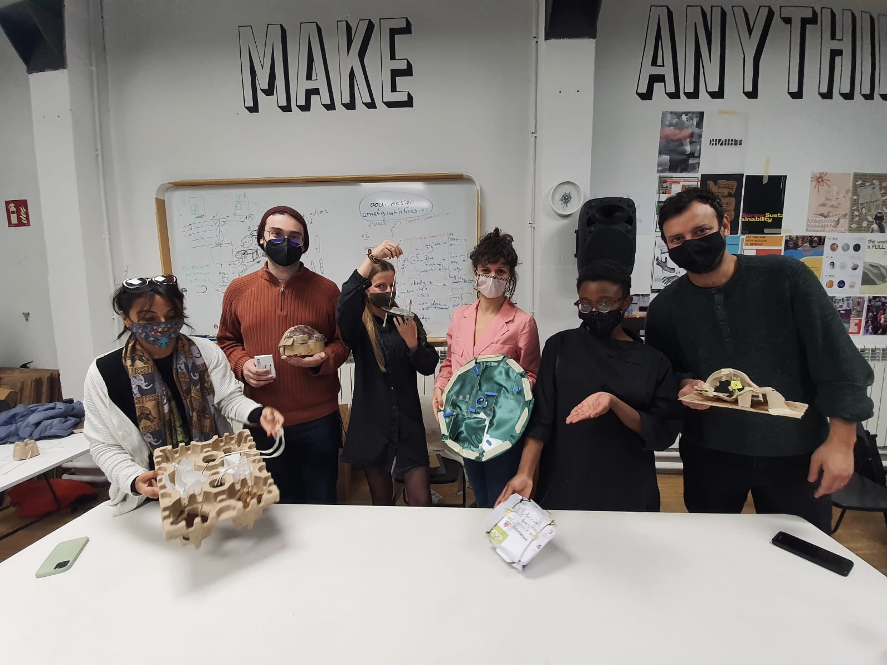
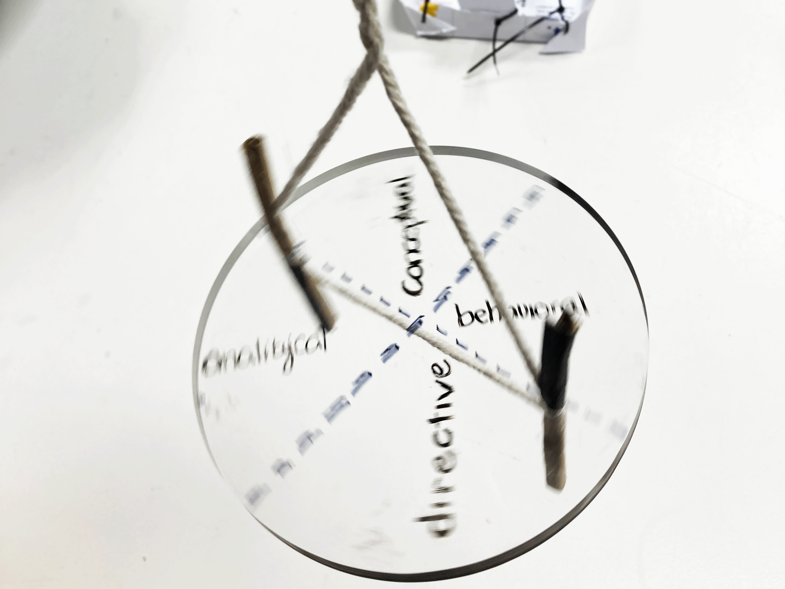
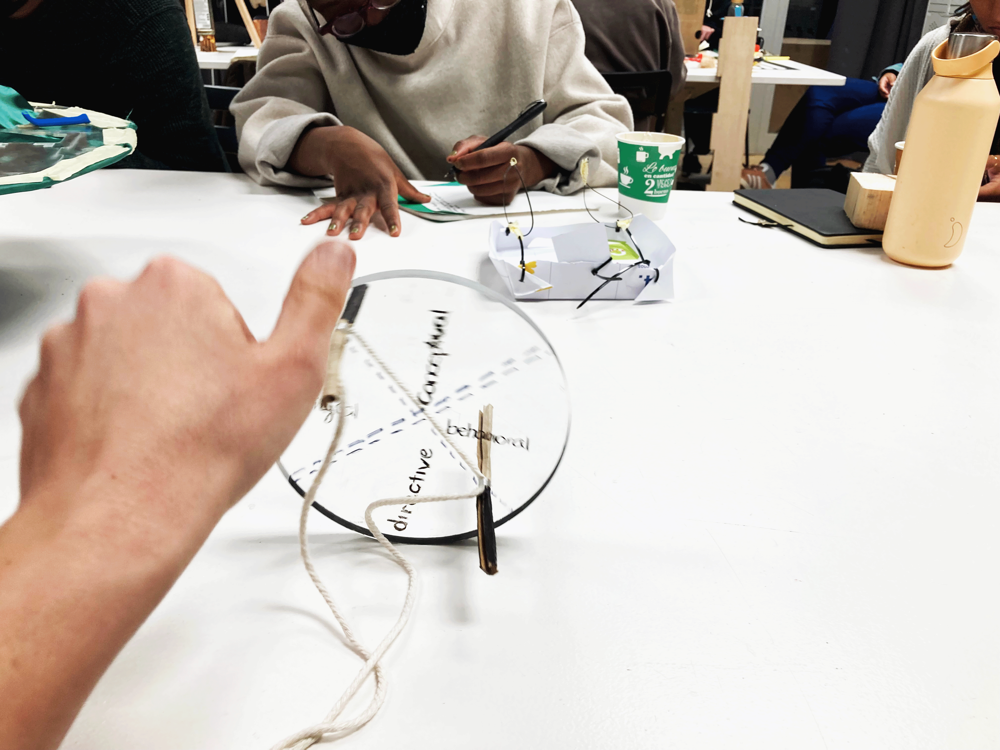

Living with my own ideas
The magic machine workshop
The fake decision maker machine
 Living with my own ideas
To be able and see through the eyes of kids, just observing them or designing participatory workshops (for them, with them or by them) is a need for me, but not enough for gaining insights. Actually to be able and observe and facilitate workshops I need more insights for creating the questions, this is why I’m really grateful for this technique we studied last week. Before I would engage more people in my fight, I engaged myself physically and mentally in a very drastic way.
With my whole body, mind and soul I could become a part of my research. I took a small part of my research and experienced it in a brave way, as for I wanted to see how kids use their built environment and how they experience the spaces around them. By that, probing my design space, the city where I live and where I can do my research through a first person exploration.
So let's see… How kids use their built environment, how they experience the spaces around them, what do the spaces give to them? To be able to do it… I collected childhood experiences from:
- My classmates
- Parents who I know
- Observing kids throughout my day
Lived my normal adult life on a regular day, but used the city based on my experience collection. I wanted to gain knowledge about interactions, perspectives, awareness and consciousness and about our existence in the system of our cities.
When I included myself in the city with a whole different dynamic, I saw many things I wont see just by running from one point to another. I saw endless possibilities for play, for interaction with the environment. I saw that the space really had an affect on me. This time I didn’t just use the functions of it, the city used my creativity and my motions, taught me about creative thinking, how to slow down and showed me possibilities to gain more knowledge.
Kids are so much more conscious about the space. I could observe that when seeing a parent with two kids, one running around them, inviting them to show them everything he saw, and the other one was holding his dad’s hand, running with him straight to their destination. The first kid was me in the morning and the second was me in the afternoon falling back to my real attitude. After our class, when my battery died, I found myself in the middle of Poblenou with no sense of time and no orientation. I became frustrated, because had no idea how will I manage to arrive back to my 1 to 1 meeting. Running home I tried to continue my exploration and use the city as a kid, but the pressure was too much on me and I could not experience the city in a fun way anymore. Also, whenever I tried to find creative ways using the city based on my collection, I found myself very disappointed not being able to see the space how a kid would see. I kept repeating their experience and was not able to understand their reality as mine. That is a big question to me. How can generations live together, if they don't even understand each other?
I really believe that being a part of a city or a neighbourhood teaches all of us a lot about systems, and systems teach us about decision making, critical agency, social, ecological and political awareness and lot more I want to develop and see from first person perspective as well. I want to see how can I transform my insights, I gained into a dialogue in between parents, neighbours, teachers, decision makers and many more.
Being in the city by myself, seems like nohow… Although I acted like no one else, and it should have been surprising for some people, who gave me the look, no one asked, no one came to me what do I do and why? However the ones I talked to about my project told me, they would be really happy to experience it as well and we should do walks together like this. My next steps are to show it to more people, to experience it together and so see other cities or neighbourhoods from this perspective as well. To walk together and see how inclusive out cities for many generations and how can we experience each others’ realities by doing so.